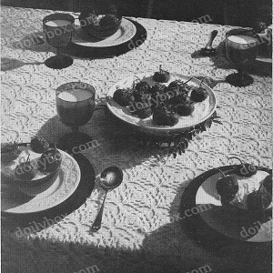

Click image for a larger view

Strawberries and Cream Tablecloth pattern
MATERIALS:
AMERICAN THREAdcOMPANY The Famous "PURITAN" MERCERIZED CROCHET COTTON 22 — 250 yd. Balls White
or
"GIANT" MERCERIZED CROCHET COTTON 10 — 550 yd. Balls White
Steel Crochet Hook No. 7 OR ANY SIZE HOOK WHICH WILL RESULT IN
MOTIF GAUGE BELOW GAUGE: Motif is 2 3/4 inch square 520 motifs (20 x 26) are required for cloth measuring 55 inches x 72 inches.
MOTIF: Ch 5, join to form a ring, ch 3, dc in ring, ch 3, 2 dc in ring, * ch 1, 2 dc in ring, ch 3, 2 dc in ring, repeat from * twice, ch 1, join in 3rd st of ch.
2nd ROUND: SL st to ch 3 loop, 1 sc, ch 3, 1 sc (picot) in same loop, ch 3, picot in next ch 1 space, * ch 3, picot in next ch 3 loop, ch 3, picot in next ch 1 space, repeat from * twice, ch 3, join in 1st sc.
3rd ROUND: Sl st into picot, ch 4, 5 dc with ch 1 between each dc in same picot, * ch 5, skip next ch 3 picot and next ch 3, 6 dc with ch 1 between each dc in next picot (corner), repeat from * twice, ch 5, skip next ch 3, picot and ch 3, join in 3rd st of ch.
4th ROUND: Sl st to center ch 1 of dc group, picot over same ch 1, * ch 7, picot in next loop, ch 7, picot over center ch 1 of next dc group, repeat from * twice, ch 7, picot in next loop, ch 7, join in 1st sc.
5th ROUND: Sl st into picot, ch 3, 2 dc, ch 9, 3 dc in same picot, * ch 1, picot in center st of next loop, ch 9, skip next picot, picot in center st of next loop, ch 1, 3 dc, ch 9, 3 dc in next picot, repeat from * all around ending to correspond, join, cut thread.
Work a 2nd motif joining to 1st motif in last round as follows: sl st into picot, ch 3, 2 dc in same picot, ch 4, join to center st of corresponding loop of 1st motif (to join: sl loop *off hook, insert in st of 1st motif, pull loop through), ch 4, 3 dc in same picot of 2nd motif, ch 1, picot in center st of next loop of 2nd motif, ch 4, join to center st of corresponding loop of 1st motif, ch 4, picot in center st of next loop of 2nd motif, ch 1, 3 dc in next picot of 2nd motif, ch 4, join to center st of corresponding loop of 1st motif, ch 4, 3 dc in same picot of 2nd motif, complete remainder of round same as 1st motif. Join 3rd motif to 2nd motif and 4th motif to 3rd and 1st motifs in same manner.
EDGE: Attach thread in center dc of 1st dc group before any corner loop, ch 3, dc in same dc, ch 3, sl st in dc for picot, dc in same center dc, * ch 5, sl st in 4th st from hook for picot, ch 1, 2 dc, ch 3, picot, dc in center st of corner loop, repeat from * twice, * ch 5, sl st in 4th st from hook for picot, ch 1, 2 dc, ch 3, picot. 1 dc in center dc of next 3 dc group, ch 5, sl st in 4th st from hook for picot, ch 1, 3 dc in center st of next ch 9 loop, ch 5, sl st in 4th st from hook for picot, ch 1, 3 dc in same center st, ch 5, sl st in 4th st from hook, ch 1, 2 dc, ch 3, picot, dc in center dc of next 3 dc group, ch 5, sl st in 4th st from hook, ch 1, 2 dc, ch 3, picot, dc in joining, ,ch 5, sl st in 4th st from hook, ch 1, 2 dc, ch 3, picot, 1 dc in joining, repeat from * across to next corner loop ending to correspond, then work next corner same as 1st corner. Continue all around in same manner, join, cut thread.
HOME